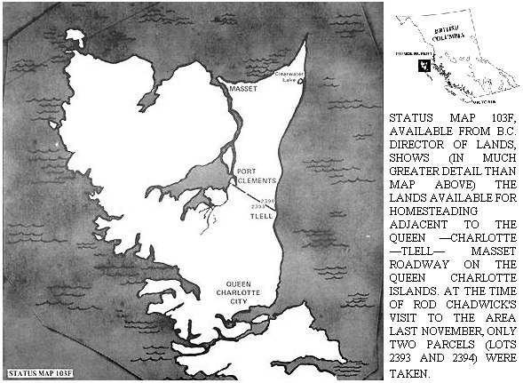

A Visit To The Queen Charlottes
Rod Chadwick returns from his 2000-mile round trip to the Queen Charlotte Islands in British Columbia and talks about a paradise for the settling.
By Rod Chadwick
May/June 1971
I have just returned (NOV. '70) from a 2000-mile round trip to the Queen Charlotte Islands in British Columbia. I trust the land to tell it's story more honestly in November than in the full bloom of summer.
From Prince Rupert-where vacant Crown Land proved to be too mountainous or heavily forested for agricultural acquisition-the journey to Queen Charlotte City was a bus, boat, plane, bus, boat, taxi sequence; total one way fare: $22. There is a less complicated but more expensive seaplane service and a $16 ferry boat. The latter, however, sails only once each week carrying freight to Masset, a multi-pot hole trailer town. For those who want personal transportation on the Islands, the Q.C. taxi service rents cars at $9 per day plus 12 cents per mile.
Applications for Crown Land under agricultural lease-purchase acquisition will not be granted on plots isolated from the Q.C.-Tlell-Masset roadway. This was made clear in the Prince Rupert Land Office before I left for Q.C. and reemphasized when I returned there. Apart from agricultural lease, there is some indication that 20-acre homesite lots may be granted to applicants in 1971. The highway restriction should not apply to these lots.
Isolated plots to squat on undisturbed for a number of years are easily found. Any inland area, especially along the Cape Ball River, is unlikely to be penetrated by even the most persistent hunter . . . let alone the heavy tread of officialdom.
Generally speaking, the available land on the Queen Charlotte is flat with light to moderate tree cover. The soil is darkly organic, laid by the forest above solid sand in depths from two inches to several feet. The laws of organic growing may usefully be exactly reversed in the case of most of this Q.C. land. It is the soil content of the organic matter-rather than the organic matter of the soil-which needs to be conserved and improved.
Water retention also must be decreased rather than increased to improve the ground and the need for extensive drainage is frequently a factor in deterring applicants. Decades ago, a large colony of Russian farmers attempted to drain the Muskeg north of Tow Hill. The massive ditches carry water to the beaches still, but the farm land never materialized.
High acidity in the soil is a common fault to most Q.C. acreages, an expensive condition to rectify in an offshore economy. Virtually the only edible crops favored by such acid soil are berries, the potato, peanut, radish and watermelon; not exactly a complete balanced diet.
Many visitors think that the Clearwater Lake area might be promising territory and on the map it appears ideal. In fact, though, the area is barricaded by swamp and forest and difficult even to locate. I met natives of the islands who had walked the beach less than a mile from the lake itself . . . yet had failed to find Clearwater in several hours of searching!
The best area in which to locate an application-because it's the region favored by the official 'scrutineers'-is that adjacent to the road between Tlell and Port Clements. Apart from lots 2393 and 2394 (as numbered on the relevant land status map) the road runs through ten square miles of vacant, surveyed Crown Land. This is gently rolling country, often very lightly wooded (which should exclude competition from logging interests). The best growing soils and those with minimal drainage problems, are on those lots divided by the highest stretches of the undulating Tlell-Port Clements highway.
Presently, Q.C. farms are fairly small developments and full scale commercial enterprises are virtually non-existent. Some vegetables grow well on developed acreages. The summer climate can make even hay a difficult crop to harvest and hay is imported to the islands each winter, at heavy cost, by a consortium of buyers.
Most classes of livestock have been established on the island, beef cattle being the most numerous. Some new blood for locally purchased stock brought in via a good young bull from the mainland would be a profitable venture for a new settler. The Limousin, which fortunately is available in Canada, would probably be best suited to the job.
The absence of predator wild life on the islands (even the local deer population was artificially introduced) make calf and sheep running less risky than usual. The massive grain storage facilities at Prince Rupert and the companion feed pelleting plant, make feedlot enterprise a viable proposition for the islands . . . even taking into account the costs of shipping livestock to mainland purchasers. In fact, despite many disadvantages, the Queen Charlotte Islands do have scope for several productive farms.
Until homesite applications begin to be approved (by no means a certain development), 'dispositions'-as they are called-of Crown Land will be made only to those interested in fully commercial development of relatively large acreages.
Disposition of Crown Land by Lease-develop-purchase agreement is granted to an applicant under the following terms: [A] That he inspects the land and reports it to be at least 50% arable in potential. (This opinion is later checked by official inspection). [B] That within 3 years of a lease being granted (usually 6-18 months after application), 10% of the agreed arable acreage is cleared and cultivated. [C] That within a maximum of 7 further years 80% of the arable acreage is cultivated. [D] That the applicant is by this time a Canadian citizen.
If these conditions are met the land can be purchased outright at the favourable valuation made at the outset of the application. A rent is charged up to that point. Details of these conditions are available from: Director of Lands, B.C. Lands Service, Parliament Buildings, Victoria, B.C. Land Bulletin No. 8 which describes all aspects of land, life and work on the Q.C. Islands; status map 103F which shows the available land; and detailed land maps centered on lots adjacent to the Tlell-Port Clements road are available from the 'Geographic Division' at the same address. ($2 would cover the bundle).
To those who are heart-set on B.C. for backing to the land this spring I would think the best program would begin with a visit to the helpful guys who man the counter at the Lands Office in Victoria. Quote: "We aren't able to pinpoint suitable vacant Crown Land for agricultural leases, but we can easily help the people who come in here and honestly say that all they want is a piece of land to get away and do their own thing. Certainly we'd rather have them come in than have them squatting indiscriminately about the province." Many areas of B.C. and most of the other Canadian Provinces have Crown Land available under agricultural lease and homesite development schemes.
Incidentally, nary a one of the numerous WHOLE EARTH CATALOG readers and others-some reportedly well equipped for a permanent stay-who swelled the Charlottes' tiny population during summer months of 1970 were to be found there in November. Perhaps some will write and let us know just what went wrong?
MAKE YOURSELF HEARD THROUGH CONSUMER ALLIANCE
The founders of CONSUMER ALLIANCE are Paul R. Ehrlich, Richard L. Harriman, and Roy Kiesling, Jr. Dr. Ehrlich is well known as a population biologist and ecologist. Mr. Harriman is a political scientist. Mr. Kiesling is an attorney and engineer.
American business sells us too many things that wear out too soon, that cannot be repaired when a small part breaks, or that never really work at all. They are wasting our time and our money, and they are making us their accomplices in wasting the vital resources of the planet itself.
If we wait to be protected by legislation we will continue to be disappointed . . . by laws with no funds for their enforcement, by regulatory agencies that become the partners of the industry they are created to regulate. Our real power is in the market place. Through CONSUMER ALLIANCE we are going to learn to use that power. We are going to tell American industry FACE-TO-FACE what we want them to do differently, and we are going to put them under increasing pressure until they do it.
Our first program is the DECLARATION OF CONSUMER RIGHTS. We will offer to producers our endorsement, and the right to use our emblem, in exchange for full compliance with the DECLARATION.
BEFORE THE CONSUMER BUYS ANY PRODUCT HE HAS A RIGHT TO THE FOLLOWING INFORMATION:
1. The name and complete mailing address of the actual maker of the product.
2. A name and model number, clearly and permanently visible that absolutely identify the product.
3. A list of all ingredients of the product, in order of percentage contained, with the percentages stated.
4. A warning of known harmful effects of any ingredient.
5. Complete instructions for normal use of the product, and a statement of what it can actually and demonstrably do for its buyer.
6. Warnings of hazards of normal use, and of any hidden hazards of abnormal use.
7. A statement, in plain English, of the date of manufacture of packaging.
8. A statement of the expected life of the product, including shelf life, and a warning of conditions of use or storage than shorten its life.
9. Notice of the other models or formulas of the same product by the same maker, so that the full range of choice is dis closed.
10. An explanation in layman's terms of the working principle the product.
11. All specifications and procedures necessary for adjustment and repair by a normally skilled repairman.
12. A list of parts with current retail prices and an address from which they can be obtained by mail.
13. A clear notice on the package if the product cannot be user: except in conjunction with some other product.
14. In the case of products sold by weight or volume, a statement of the unit price.
FURTHERMORE, THE CONSUMER HAS A RIGHT TO DEMAND THAT EVERY PRODUCT BE DESIGNED TO IMPOSE THE MINIMUM BURDEN ON THE ENVIRONMENT FROM ITS MANUFACTURE TO ITS DISPOSAL.
(THE SAME PRODUCT WILL ALWAYS BE SOLD UNDER THE SAME NAME, AND IDENTICAL MODEL NUMBERS WILL BE PLACED ONLY ON IDENTICAL PRODUCTS.)
Regular membership . . . $5 per year
Junior membership (under 18) . . . $2 per year
CONSUMER ALLIANCE, INC.
P.O. Box 11773
Palo Alto, CA, 94306
 |
 |
|